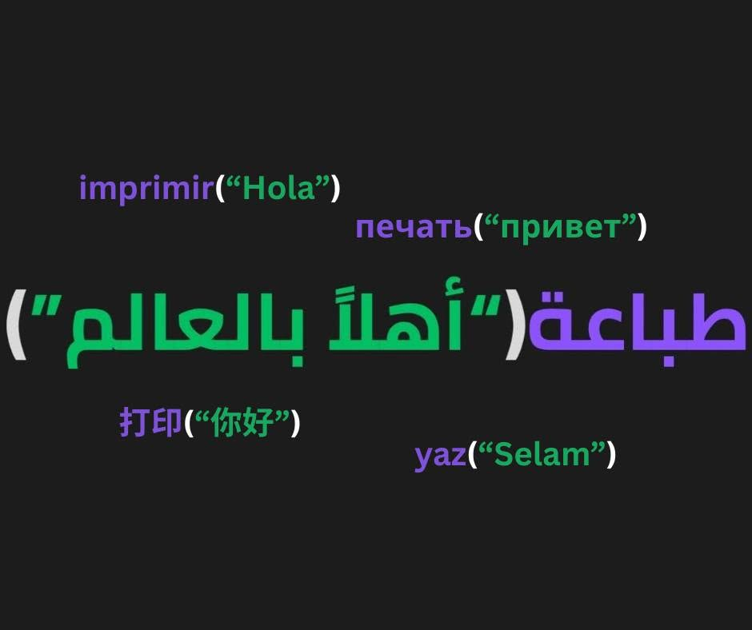

What is WorldLang ?
Out of 8 billion people on Earth, native English speakers account for only around 380 million—less than 5% of the world's population. Even when counting second-language speakers, over 80% of humanity does not speak English. Yet, almost every major programming language requires English literacy before a single line of code can be written.
WorldLang was born from a fundamental core belief: Talent is everywhere, but access is NOT.
The next tech pioneer or brilliant innovator could come from any corner of the globe. WorldLang removes the spoken-language barrier so young learners and non-English speakers can master computational thinking, problem-solving, and building software directly in their native tongue. By letting learners focus on logic rather than translation, WorldLang ensures that language is never the bottleneck to human potential.

Next ➡